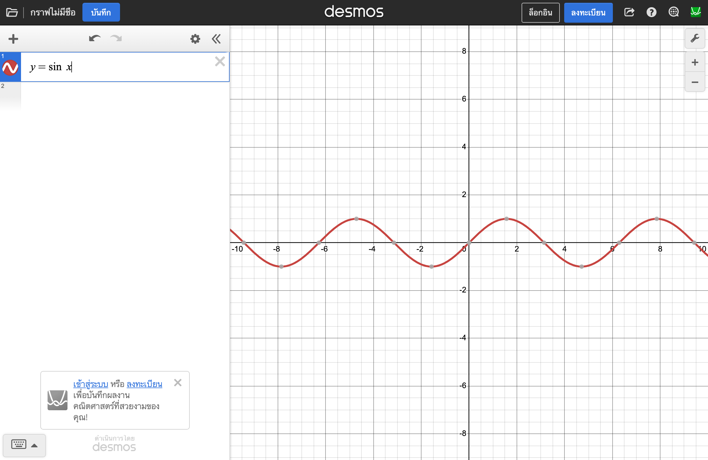
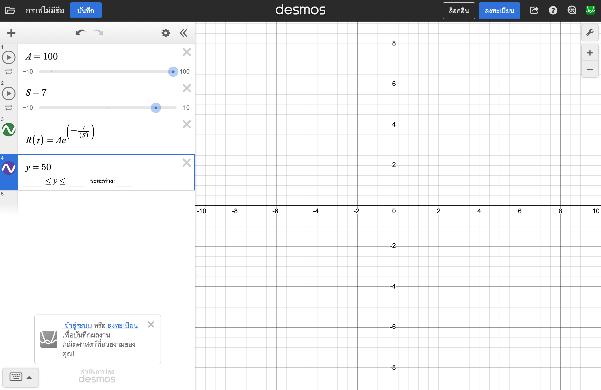
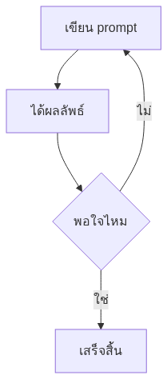
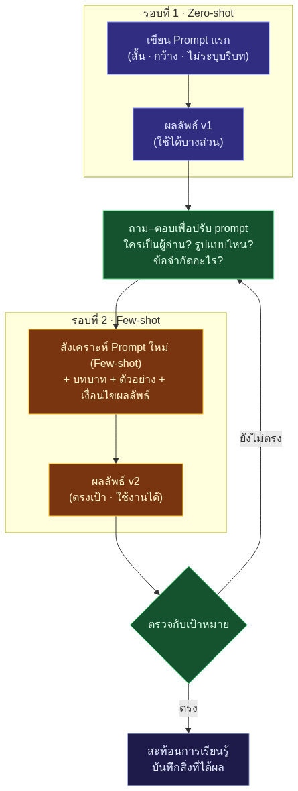
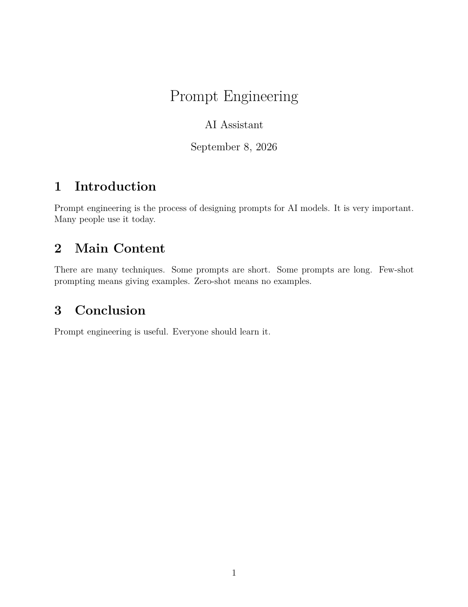
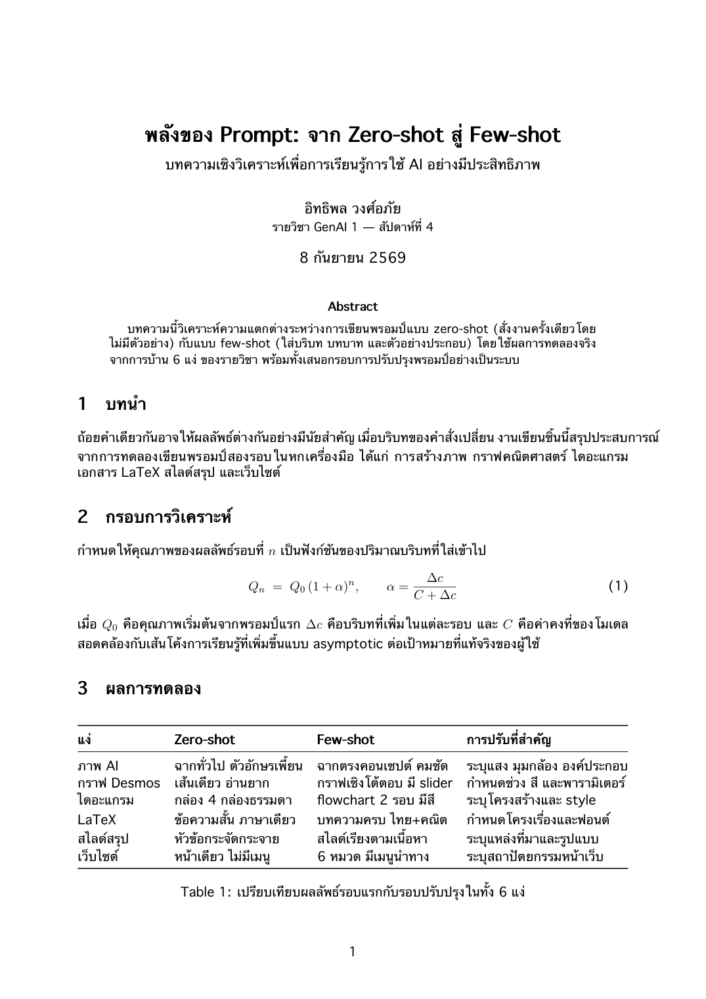
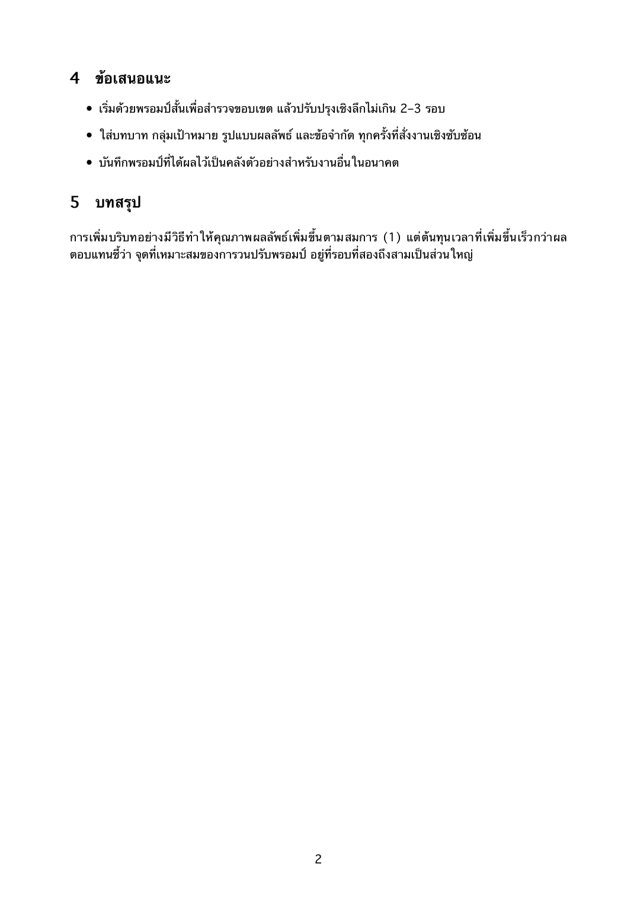

พลังของ Prompt:
จาก Zero-shot สู่ Few-shot ใน 6 แง่
การบ้านชิ้นนี้ทดลองเขียนพรอมป์ 2 รอบใน 6 เครื่องมือ — เริ่มจากพรอมป์แรกแบบ zero-shot สั้น ๆ ดูผลลัพธ์ แล้วถาม-ตอบเพิ่มรายละเอียดจนได้พรอมป์ใหม่แบบ few-shot พร้อมสะท้อนการเรียนรู้ว่าอะไรเปลี่ยนไปอย่างไร ทุกแง่ใช้ธีมเดียวกันคือ "การเรียนรู้กับ AI" เพื่อให้งานทั้งหมดต่อเนื่องเป็นชิ้นเดียว
พรอมป์แรก (zero-shot) → ผลลัพธ์แรก → ถาม-ตอบเพิ่มรายละเอียด → พรอมป์ใหม่ (few-shot) → ผลลัพธ์ใหม่ → สะท้อนการเรียนรู้
เว็บไซต์นี้เป็นแง่ที่ 6 และรวมงานแง่ 1–5 ไว้ครบในที่เดียว ต่อเนื่องด้วยธีมเดียวกัน ลงบน GitHub Pages
Higgsfield AI · Desmos · Mermaid · LaTeX (Tectonic/XeLaTeX) · NotebookLM เวิร์กโฟลว์ · GitHub Pages
การสร้างรูปด้วย AI
เครื่องมือ: Higgsfield AI (โมเดล nano_banana_pro) — โจทย์: ภาพประกอบหัวข้อ "นักเรียนกับ AI ผู้ช่วยเรียนรู้ตอนกลางคืน"
ผลลัพธ์แรก (zeroshot.png · nano_banana_pro 1k)
ได้ "ห้องเรียนแห่งอนาคต" แบบทั่วไป — นักเรียนหลายคน ฉากกว้างจัด แสงสม่ำเสมอ ตัวอักษรบนหน้าจอเพี้ยน และไม่ได้บรรยากาศ "ตอนกลางคืน" ตามที่คิดไว้ ภาพสวยแต่ไม่ตรงโจทย์และใช้ต่อไม่ได้จริง
ผลลัพธ์ใหม่ (fewshot.png · nano_banana_pro 2k)
ได้ฉากตรงคอนเซปต์: นักเรียนคนเดียวยามค่ำคืน โคมไฟอุ่นซ้ายภาพ โฮโลแกรม AI ลอยเหนือแล็ปท็อป เงาน้ำเงินเข้ม และเว้นพื้นที่ว่างขวาไว้ใส่หัวข้อ — ใช้เป็นภาพฮีโร่ของเว็บ/สไลด์ได้ทันที
สะท้อนการเรียนรู้ · แง่ที่ 1
- พรอมป์ภาษาไทยสั้น ๆ ให้ "ความหมาย" แต่ไม่ให้ "ภาพ" — โมเดลต้องเดาทุกอย่าง (กี่คน ที่ไหน แสงอะไร) จึงได้ภาพแบบทั่วไปที่ใครก็ใช้ได้ แต่ไม่ใช่ของเรา
- โครงสร้าง subject → scene → lighting → composition → constraints ทำให้คุมผลลัพธ์ได้เกือบทั้งหมด และเปลี่ยนภาษาเป็นอังกฤษเพื่อความแม่นของคำศัพท์ภาพ
- ข้อจำกัดเชิงลบ (no text, no watermark) คือ "กันเหนียว" ที่ประหยัดเวลาแก้ภาพเสียรอบสอง
- เศรษฐศาสตร์ของพรอมป์: รอบแรกใช้ความละเอียดต่ำ (1k) ทดสอบไอเดีย รอบสองค่อยขยับ 2k — จ่ายเครดิตเฉพาะตอนมั่นใจ
ห้องเรียนทั่วไป · ตัวอักษรเพี้ยน · ใช้งานจริงไม่ได้
ตรงคอนเซปต์ · แสง/มุมคุมได้ · พร้อมใช้เป็นภาพหลักทันที
กราฟอธิบายความสัมพันธ์ทางคณิตศาสตร์
เครื่องมือ: Desmos — โจทย์: สื่อสาร "เส้นโค้งการลืม" ของนักเรียนเป็นกราฟที่เลื่อนดูค่าได้
ผลลัพธ์แรก — นิพจน์เดียว กราฟเส้นเดียว

พิมพ์ y=sin x ใน Desmos ก็ได้กราฟสวย ๆ หนึ่งเส้น — แต่ไม่ได้สื่อสารอะไรเลย
ไม่มีพารามิเตอร์ให้ลอง ไม่มีจุดเปรียบเทียบ และไม่เกี่ยวกับโจทย์ "ความสัมพันธ์ทางคณิตศาสตร์" ของเรื่องที่สนใจ
A=100 และ S=7 ก่อน — Desmos จะสร้าง slider อัตโนมัติ แล้วค่อยนิยามฟังก์ชัน R(t) ที่ใช้ตัวแปรทั้งสองy=50 อีกบรรทัด จะเห็นจุดตัด = จำนวนวันก่อนความจำหลุดครึ่งหนึ่งผลลัพธ์ใหม่ — กราฟเชิงโต้ตอบพร้อม slider 2 ตัวและเส้นวิกฤต

นิพจน์ที่ใช้ (ลองพิมพ์ตามใน desmos.com/calculator):
ตอนนี้กราฟเล่าเรื่องได้: ถ้าไม่ทบทวน (S เล็ก) ความจำตกผ่านเส้น 50% ในไม่กี่วัน แต่ถ้าทบทวนทำให้ S ใหญ่ขึ้น เส้นโค้งแบนลงอย่างเห็นได้ชัด — เหมาะไปสอนต่อทันที
สะท้อนการเรียนรู้ · แง่ที่ 2
- ความต่างไม่ได้อยู่ที่ "กราฟสวยขึ้น" แต่อยู่ที่เป้าหมายของกราฟ — พรอมป์แรกไม่ได้บอกว่าจะสื่อสารอะไร จึงได้กราฟที่ "ถูกต้องแต่ไร้ความหมาย"
- การระบุพารามิเตอร์เป็นตัวแปร (A, S) เปลี่ยนภาพนิ่งให้เป็นเครื่องมือสำรวจ — ผู้เรียนได้ "เล่น" กับคณิตศาสตร์ ไม่ใช่แค่ดู
- เส้นอ้างอิงเพียงเส้นเดียว (y=50) ทำให้กราฟมี "ประเด็น" ทันที — รายละเอียดเล็ก ๆ ที่เกิดจากการถามต่อ
- คำถามชี้นำ (จะทำให้ลื่นดูเองได้ไหม?) คือหัวใจของ few-shot — เราถามจนได้คำตอบที่เป็น "เครื่องมือ" ไม่ใช่ "คำตอบ"
เส้นโค้งเดียว · ดูแล้วจบ · ไม่มีบริบท
slider โต้ตอบ · มีเส้นวิกฤต · ใช้สอนได้จริง
การสร้าง Diagrams จาก Mermaid
เครื่องมือ: Mermaid — โจทย์: ไดอะแกรมสรุป "วงจรพัฒนาพรอมป์" ที่เป็นแกนของการบ้านทั้งชิ้น
ผลลัพธ์แรก — กล่อง 4 ใบธรรมดา

ได้ loop "เขียน → ผลลัพธ์ → พอใจไหม" ซึ่งถูกต้องแต่ว่างเปล่า — ไม่แสดงความต่างระหว่างรอบแรกกับรอบปรับปรุง ไม่มีสี ไม่มีกลุ่ม ใช้ประกอบการสอนไม่ได้
subgraph ครอบแต่ละรอบ พร้อมตั้งชื่อกลุ่ม เช่น "รอบที่ 1 · Zero-shot"classDef กำหนดสีกล่องแยก zero / few / กระบวนการ และเพิ่มกล่อง "ถาม–ตอบเพื่อปรับ prompt" เป็นสะพานเชื่อม ปิดท้ายด้วยจุดตัดสินใจ "ตรงกับเป้าหมายไหม"ผลลัพธ์ใหม่ — วงจร 2 รอบพร้อมสีและเงื่อนไข

โค้ด mermaid (นำไปวางที่ mermaid.live หรือ mermaid.ai ได้ทันที):
(สั้น · กว้าง · ไม่ระบุบริบท)"] --> B["ผลลัพธ์ v1
(ใช้ได้บางส่วน)"] end B --> R["ถาม–ตอบเพื่อปรับ prompt"] R --> P["สังเคราะห์ Prompt ใหม่ (Few-shot)"] subgraph S2["รอบที่ 2 · Few-shot"] P --> Q["ผลลัพธ์ v2
(ตรงเป้า · ใช้งานได้)"] end Q --> V{"ตรวจกับเป้าหมาย"} V -->|ยังไม่ตรง| R V -->|ตรง| F["สะท้อนการเรียนรู้"] classDef zero fill:#312e81,stroke:#818cf8,color:#e0e7ff classDef few fill:#78350f,stroke:#fbbf24,color:#fef3c7 classDef proc fill:#14532d,stroke:#4ade80,color:#dcfce7 class A,B zero class P,Q few class R,V proc
สะท้อนการเรียนรู้ · แง่ที่ 3
- ไดอะแกรมต้องการข้อความที่คมก่อน syntax — พรอมป์แรกให้หัวข้อแต่ไม่ให้ "โครงเรื่อง" ผลลัพธ์จึงเป็น generic loop ที่ใครก็เขียนได้
- การระบุคำสั่งเฉพาะของเครื่องมือ (subgraph, classDef, TD) คือ few-shot ในเชิงเทคนิค — ยิ่งรู้ "คำ" ของเครื่องมือมากเท่าไหร่ ยิ่งคุมผลลัพธ์ได้มากขึ้นเท่านั้น
- สีไม่ใช่การตกแต่ง แต่คือ ชั้นข้อมูล: ฟ้า=รอบแรก ทอง=รอบสอง เขียว=กระบวนการ อ่านเข้าใจใน 3 วินาทีโดยไม่ต้องอ่านทุกกล่อง
4 กล่อง · ไม่มีบริบท · จำยาก
2 รอบชัดเจน · สีแยกชั้นความหมาย · ใช้สอนได้
การสร้างบทความจาก LaTeX
เครื่องมือ: LaTeX (คอมไพล์ด้วย Tectonic/XeLaTeX ตามหลักเดียวกับ Overleaf) — โจทย์: บทความสรุปบทเรียนสัปดาห์นี้
ผลลัพธ์แรก (v1-zeroshot.pdf · 1 หน้า)

ได้เทมเพลตภาษาอังกฤษสามย่อหน้า พื้น ๆ — ประโยคสั้น ไม่มีตาราง ไม่มีสมการ ไม่มีภาษาไทย (เพราะไม่ได้ระบุ และไม่มีการตั้งค่าฟอนต์ไทย) ใช้ส่งงานจริงไม่ได้
fontspec ตั้งฟอนต์ไทย (เช่น Thonburi/Sarabun) และเปิด \XeTeXlinebreaklocale "th" เพื่อตัดคำไทยให้ถูกต้องbooktabs สร้างตาราง 3 เส้น (toprule/midrule/bottomrule) เทียบทั้ง 6 แง่ พร้อมคอลัมน์ "การปรับที่สำคัญ"ผลลัพธ์ใหม่ (v2-fewshot.pdf · บทความไทย 2 หน้า สมการ+ตาราง)


บทความครบองค์ประกอบ: บทคัดย่อ สมการเชิงประจักษ์ ตารางเปรียบเทียบ 6 แง่จากงานจริง และข้อเสนอแนะ — คอมไพล์ผ่านด้วย Tectonic (XeLaTeX) ฟอนต์ไทยตัดคำถูกต้อง
สะท้อนการเรียนรู้ · แง่ที่ 4
- LaTeX มี "กับดักภาษา" — ไม่ระบุ engine/ฟอนต์ ก็ได้เอกสารที่ภาษาไทยพังทั้งหมด; พรอมป์ที่ดีต้องรู้จุดวิกฤตของเครื่องมือ (XeLaTeX + fontspec + linebreak)
- การกำหนดโครงเรื่องล่วงหน้าในพรอมป์ เปลี่ยนผลลัพธ์จาก "เทมเพลต" เป็น "บทความ" — เนื้อหาถูกจัดวางตามตรรกะวิชาการโดยไม่ต้องเขียนเองใหม่ทั้งหมด
- ตารางที่ขอเฉพาะ (booktabs, 3 เส้น) ทำให้เอกสารดูเป็นวารสารจริง — รายละเอียดเชิงเทคนิคที่ได้มาจากการถามต่อ
อังกฤษ 3 ย่อหน้า · ไม่มีโครงเรื่อง · ใช้ส่งไม่ได้
ไทยเต็มรูปแบบ · สมการ+ตาราง · ระดับส่งได้
สร้างสไลด์สรุปงานด้วย NotebookLM
เครื่องมือ: NotebookLM — โจทย์: สรุปสไลด์เรียน Week 4 "พลังของ Prompt" (42 หน้า) ให้นักศึกษาทบทวนได้ใน 5 นาที
ผลลัพธ์แรก — สรุปย่อแบบข้อความ
NotebookLM ตอบกลับมาเป็นย่อหน้าข้อความ ไม่ใช่สไลด์ — เพราะคำสั่งไม่ได้ระบุจำนวนหน้า โครงเรื่อง กลุ่มเป้าหมาย และรูปแบบการนำเสนอ ต้องคัดลอกไปจัดรูปเองอีกยาว
ผลลัพธ์ใหม่ — สไลด์ทบทวน 10 หน้า จากพรอมป์ v2
สไลด์สรุปที่สร้างตามพรอมป์รอบสอง (เปิดเต็มจอได้ในปุ่มด้านล่าง) — ทำซ้ำใน NotebookLM จริงได้ใน 5 นาทีตามขั้นตอน: ① ไปที่ notebook.google → สร้าง Notebook ใหม่ ② อัปโหลดไฟล์ Week4 PDF เป็นแหล่งข้อมูล ③ วางพรอมป์รอบแรก ดูผล ④ วางพรอมป์รอบสอง (ด้านบน) ⑤ กดสร้าง Brief/Presentation แล้วบันทึกผลลัพธ์
สะท้อนการเรียนรู้ · แง่ที่ 5
- เครื่องมือสรุปเอกสารมี "ค่าเริ่มต้น" ของมันเอง — ถ้าไม่ระบุรูปแบบ จะได้ข้อความย่อ ไม่ใช่สื่อการสอน; การระบุ รูปแบบผลลัพธ์ (สไลด์ 10 หน้า หน้าละ 3 bullet) คือสิ่งที่เปลี่ยนชนิดของผลลัพธ์
- การให้โครงเรื่องเจาะจงถึงหน้า ทำให้สไลด์เรียงตามลำดับการสอนจริง ไม่ตามลำดับที่โมเดลสุ่ม
- เงื่อนไขเล็ก ๆ ("คำศัพท์สำคัญตัวหนา + ตารางท้ายเล่ม") คือสิ่งที่ทำให้ผลงานเหมาะกับผู้ใช้จริง — นักศึกษาก่อนสอบ
ย่อหน้าข้อความ · ต้องจัดรูปเองใหม่
สไลด์ 10 หน้าพร้อมใช้ · โครงตามหลักการสอน
เขียนเว็บไซต์ฝากบน GitHub
เครื่องมือ: HTML/CSS/JS + GitHub Pages — เว็บที่กำลังอ่านอยู่นี้คือผลลัพธ์ของแง่นี้เอง
ผลลัพธ์แรก — หน้าเดียวเลื่อนยาว
โครงสร้าง "หน้าเดียวยาว" ทำให้ผู้อ่านหลงทาง — อาจารย์ที่ต้องตรวจงาน 6 แง่ ควรคลิกเลือกแง่ที่ต้องการดูได้ทันทีจากเมนูด้านบน
ผลลัพธ์ใหม่ — เว็บไซต์ที่กำลังดูอยู่
คลิกเลือกแง่ที่ 1–6 หรือกลับหน้าแรก พร้อมลิงก์ตรง (#s1–#s6) แชร์ต่อได้
zero-shot → ผล → ถามตอบ → few-shot → ผล → สะท้อน หาอะไรก็เจอที่ตำแหน่งเดิม
ภาพ Higgsfield กราฟ Desmos ไดอะแกรม Mermaid PDF จาก LaTeX และสไลด์สรุป อยู่ครบในเว็บเดียว (โบนัส 1–5)
repo: FiezDev/genai-prompt-lab
สะท้อนการเรียนรู้ · แง่ที่ 6 (และภาพรวมทั้งชิ้น)
- เว็บคือ "สื่อ" ไม่ใช่ "เอกสาร" — พรอมป์แรกคิดถึงเนื้อหา แต่ลืมผู้อ่านและการนำทาง; การระบุเมนู 6 หมวด + hash routing เกิดจากการคิดถึงอาจารย์ผู้ตรวจก่อน
- ความต่อเนื่อง (ธีมเดียว โครงเดียว สีเดียว) ทำให้ 6 งานรวมเป็น "หนึ่งผลงาน" — ตรงตามเงื่อนไขโบนัสพอดี
- เมื่อทำครบ 6 แง่ เราเห็นแบบแผนเดียวกันหมด: zero-shot ได้ของทั่วไป — few-shot ได้ของของเรา ไม่ว่าจะภาพ กราฟ ไดอะแกรม เอกสาร สไลด์ หรือเว็บ
หน้ายาวเดียว · หลงทาง · ไม่มีนำทาง
7 แท็กเลือกได้ · responsive · ผลงานจริงครบ 6 แง่
การใช้ Canva กับ Canva MCP
ครูแนะนำ Canva สำหรับแง่ที่ 1 — คู่มือนี้อธิบายวิธีต่อ Canva MCP เข้ากับ AI assistant เพื่อสั่งสร้างงานออกแบบด้วยภาษาธรรมชาติ
Canva MCP คืออะไร
MCP (Model Context Protocol) คือมาตรฐานเปิดที่ให้ AI assistant เรียกใช้เครื่องมือภายนอกได้ Canva มี MCP Server ของตัวเอง เมื่อต่อแล้ว AI จะสร้าง/แก้/ค้นหา/ส่งออกงานในบัญชี Canva ของคุณได้โดยตรง เช่น "สร้างโปสเตอร์ 9:16 ธีมกลางคืนสีทอง-น้ำเงิน แล้วส่งออกเป็น PNG"
ขั้นตอนหลัก: ① ขอสิทธิ์ MCP ที่ canva.dev (รออนุมัติ) → ② เพิ่ม endpoint ข้างบนในไคลเอนต์ → ③ ล็อกอิน Canva เพื่ออนุญาต (OAuth) → ④ ลองสั่ง "แสดงงานล่าสุดใน Canva ของฉัน" ความสามารถ: สร้างดีไซน์จากข้อความ · แก้งานเดิม · ค้นหาเทมเพลต/อัปโหลด asset · ส่งออก PDF/PNG/JPG/PPTX/MP4 (resize เฉพาะ Pro)